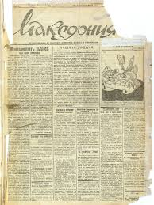
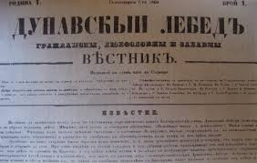
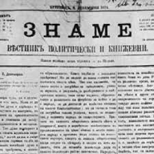

Български книжици
- Години на издаване: 1858 – 1862 г.
- Място: Будапеща
- Основатели: Драган Цанков, Иван Богоров
- Съдържание: Културни и просветни теми, статии за историята, езика и образованието.
- Значение: Един от първите периодични издания с български книжовен характер.

Гайда
- Години на издаване: 1863 – 1867 г.
- Място: Браила, Румъния
- Издател и редактор: Петко Р. Славейков
- Съдържание: Литературни творби, стихове, народни песни, обществени коментари.
- Значение: Спомага за развитието на българската литература и език.

Свобода
- Години на издаване: 1869 – 1873 г.
- Място: Браила
- Редактор: Любен Каравелов
- Съдържание: Политически статии, призиви за революционна борба, социални и културни теми.
- Значение: Издание на Българския революционен централен комитет (БРЦК), предшественик на „Независимост“.

Независимост
- Години на издаване: 1873 – 1874 г.
- Място: Букурещ
- Редактор: Любен Каравелов
- Съдържание: Продължение на политическата линия на „Свобода“.
- Значение: Изразител на идеите на българската революционна емиграция.

Знаме
- Години на издаване: 1875 – 1876 г.
- Място: Букурещ
- Редактор: Христо Ботев
- Съдържание: Силно революционно и публицистично списание, остри критики срещу османското владичество и духовната пасивност.
- Значение: Изразител на безкомпромисната революционна линия на Ботев.

Цариградски вестник
- Години на издаване: 1848 – 1862 г.
- Място: Цариград (Истанбул)
- Основател и редактор: Иван Богоров
- Съдържание: Новини от българските земи, просветни и обществени теми.
- Значение: Първият български вестник.

Дунавски лебед
- Години на издаване: 1860 – 1862 г.
- Място: Русе
- Редактор: Георги Раковски
- Съдържание: Публицистика, исторически и патриотични статии, революционни идеи.
- Значение: Първият български вестник, издаван в самите български земи под османска власт. Има ясно изразена политическа насоченост.

Македония
- Години на издаване: 1867 – 1872 г.
- Място: Цариград
- Редактор: Янко Сакъзов (сътрудници: П. Р. Славейков и други)
- Съдържание: Публикува статии по църковния въпрос, политически коментари, текстове за културното развитие.
- Значение: Защитава българските интереси в Македония и Тракия, противопоставя се на гръцкото духовенство.

Право
- Години на издаване: 1869 – 1872 г.
- Място: Цариград
- Редактор: Драган Цанков
- Съдържание: Защитава интересите на българската общност и подкрепя църковната борба за независима Българска екзархия.
- Значение: Издание с умерена политическа линия, но активно в защита на българската идентичност.

Читалище
- Години на издаване: от 1870 г.
- Място: Шумен
- Съдържание: Литературно и просветно списание, свързано с читалищното движение.
- Редактори: Местни възрожденски учители и книжовници
- Значение: Спомага за развитието на културния живот в българските градове и съдейства за разпространението на знание.